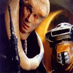
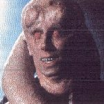

Menu:The Conspirators: |
Plot: Reason: Co-Conspirators: Action Taken: Bib was not happy with his situation. He longed to get rid of Jabba and take over his empire. He began conversing with the B'ommar monks in the palace and planned the demise of the Hutt. He constantly had to protect Nat from Jabba, even going as far as letting the monks remove Nat's brain and letting Jabba feed the now empty body to the Rancor. He searched the palace for secret passages and got security codes for many of the Hutt's accounts. When Luke Skywalker and Princess Leia came to the palace to free Han Solo, Bib advanced his plans to kill Jabba. He had originally planned to feed Jabba to the Rancor but Luke stopped that idea. He placed his personal speeder bike on the sail barge and went with Jabba to the Pit of Carkoon, taking with him a thermal detonator, which he would use to kill the Hutt and then return to take over the palace. Outcome: His brain was forcibly removed and placed in a nutrient jar. After a while he and Nat got brain walkers and began looking for cloning technology so that they may grow new bodies for themselves. My Opinion: When this happened Bib Fortuna's plan was destined to fail. |
Off Site Links: |